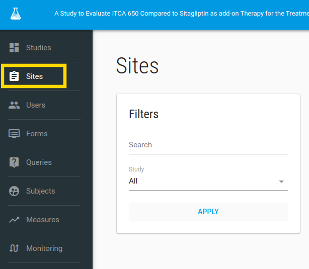
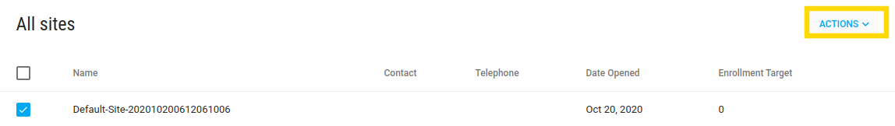
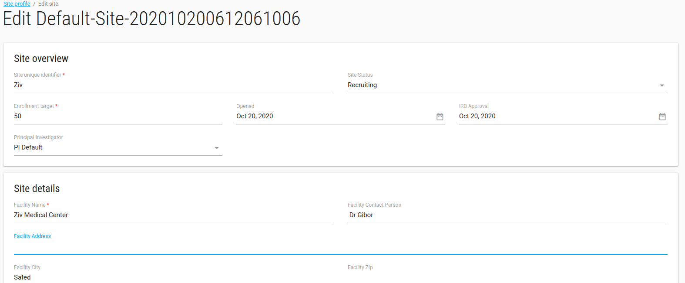
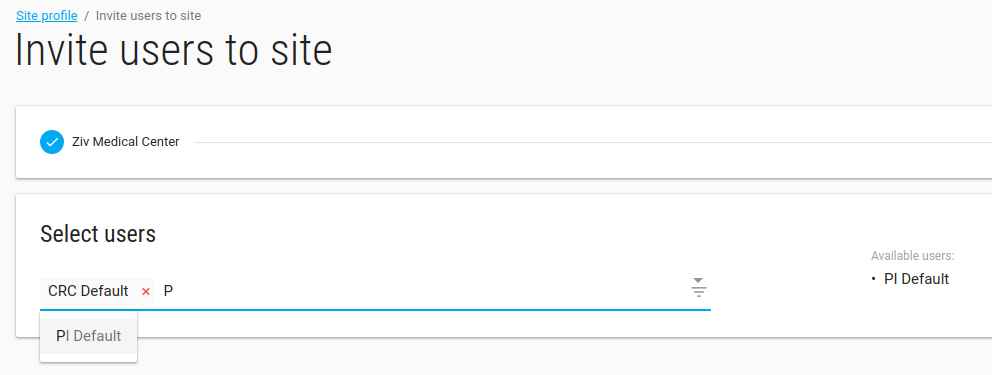
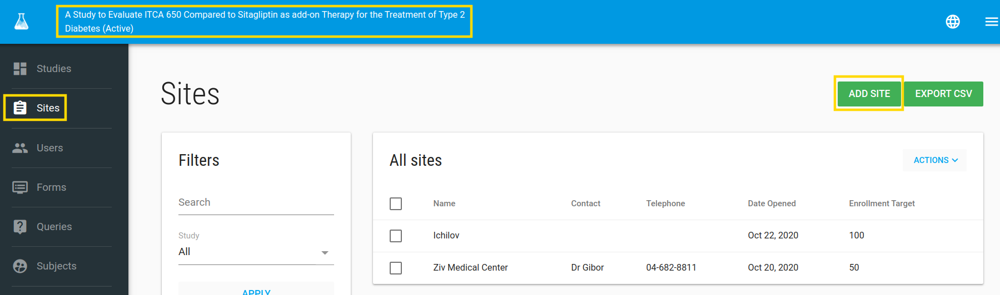

Manage Sites
In order to manage research sites, click on Sites in the left bar.

Default site
By default, you have one site assigned to your study, called Default-Site-XXX
Edit the default site by ACTIONS-> EDIT

Edit Site
In the Edit option you can edit your site properties.

Click SAVE green button to save your site properties.
Site Profile
In Site Profile you can see your site's definition, add comments, and mange this site's Users by click on ACTIONS->Manage Users
Mange Users
In Site Manage Users you can remove/add existing User to this site (if you don't have the User, go to create it)
You can add a User by typing any part of his name - the application will show you a list of matching User names. 
Click on invite green button
Now you have a site with Users (like - CRC, PI) in your study.
Add a new site
In the Sites index page you can add new sites to your study. To add site click on ADD SITE button 
Enter the site properties and save it by click on SAVE green button.